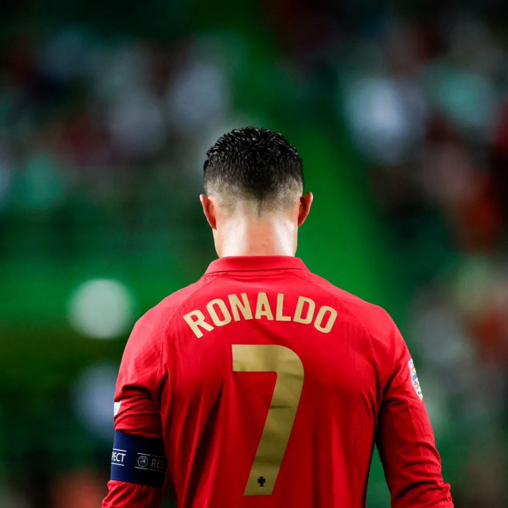

Destaque
Cr7 ainda tem uma copa pela frente?
Cristiano Ronaldo, aos 37 anos de idade, se despede da Copa do Mundo do Catar, que deve ser a última da carreira do atacante de Portugal. O craque encerra sua participação no Mundial com 21 partidas jogadas, oito gols, quatro cartões amarelos e nenhum vermelho. Leia mais em: https://www.umdoisesportes.com.br/copa-do-mundo/2022/cristiano-ronaldo-despedida-copa/ Copyright © 2023, Gazeta do Povo. Todos os direitos reservados.
Leia mais